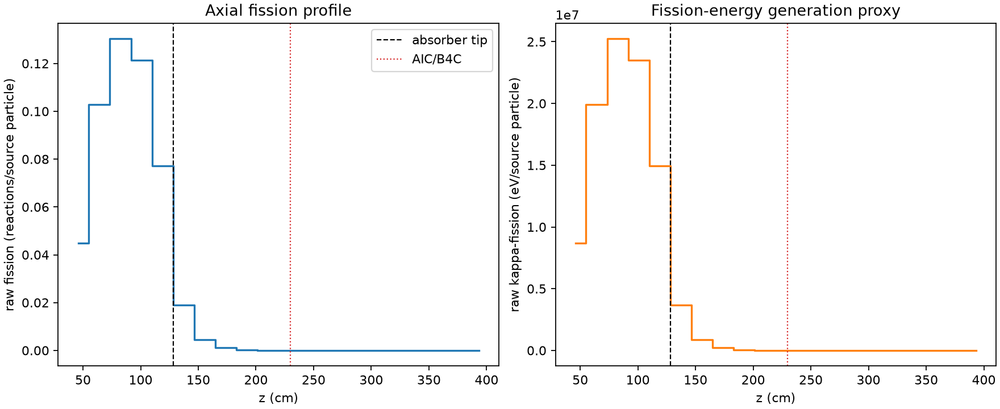
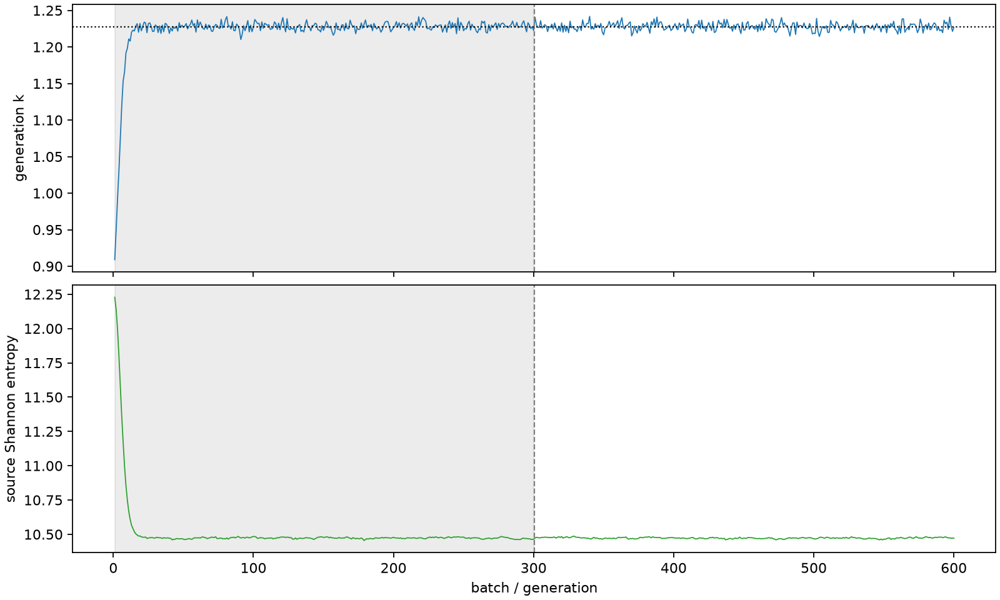

| field | value |
|---|---|
| experiment | V2-STAGE_128_OGRENCI_01-0021 |
| k | 1.2277747494713998 |
| MC standard error | 0.00018477130407608717 |
| seconds | 981.3630223539949 |
| acceptance | not_assessed |
| convergence | review_required |
Completed is output integrity only; physical and statistical review required. Zero tallies do not prove zero production or zero uncertainty.
| diagnostic | value |
|---|---|
| geometric fuel voxels | 5280 |
| zero fission tally voxels | 1635 |
| low signal fuel voxels | 2709 |
| low signal fission share | 7.988759458383349e-05 |
| low signal kappa share | 7.991994116697422e-05 |
| important fission share | 0.9501168604411769 |
| previous filter included | 2571 |
| duration estimate s | 1562.5173488400023 |
| actual minus estimate s | -581.1543264860074 |
| fission relative MC error | statistics |
|---|---|
| all_geometric_fuel | {"voxels": 5280, "positive_mean_voxels": 3645, "zero_mean_voxels": 1635, "undefined_relative_error_voxels": 1635, "median": 0.02605192375483245, "p95": 0.988194752129654, "maximum": 1.0000000000000002} |
| low_signal | {"voxels": 2709, "positive_mean_voxels": 1074, "zero_mean_voxels": 1635, "undefined_relative_error_voxels": 1635, "median": 0.6603132733792998, "p95": 1.0, "maximum": 1.0000000000000002} |
| important_95pct | {"voxels": 1320, "positive_mean_voxels": 1320, "zero_mean_voxels": 0, "undefined_relative_error_voxels": 0, "median": 0.005340821676502801, "p95": 0.008378585238803577, "maximum": 0.009851694259250225} |
| outside_previous_filter | {"voxels": 2709, "positive_mean_voxels": 1074, "zero_mean_voxels": 1635, "undefined_relative_error_voxels": 1635, "median": 0.6603132733792998, "p95": 1.0, "maximum": 1.0000000000000002} |
| kappa_fission relative MC error | statistics |
|---|---|
| all_geometric_fuel | {"voxels": 5280, "positive_mean_voxels": 3645, "zero_mean_voxels": 1635, "undefined_relative_error_voxels": 1635, "median": 0.0260141450227589, "p95": 0.9883857980388077, "maximum": 1.0000000000000002} |
| low_signal | {"voxels": 2709, "positive_mean_voxels": 1074, "zero_mean_voxels": 1635, "undefined_relative_error_voxels": 1635, "median": 0.6607464650578455, "p95": 1.0, "maximum": 1.0000000000000002} |
| important_95pct | {"voxels": 1320, "positive_mean_voxels": 1320, "zero_mean_voxels": 0, "undefined_relative_error_voxels": 0, "median": 0.005334838289737138, "p95": 0.00836881901243901, "maximum": 0.009838862879060785} |
| outside_previous_filter | {"voxels": 2709, "positive_mean_voxels": 1074, "zero_mean_voxels": 1635, "undefined_relative_error_voxels": 1635, "median": 0.6607464650578455, "p95": 1.0, "maximum": 1.0000000000000002} |
| axial bin | fission share | kappa-fission share |
|---|---|---|
| 1 | 0.08936296489759017 | 0.08936506224000611 |
| 2 | 0.2049915624495846 | 0.20498706142424794 |
| 3 | 0.25985663703656986 | 0.25985107111177325 |
| 4 | 0.24189603712749577 | 0.24189104471322273 |
| 5 | 0.15400965892993634 | 0.15400756702323476 |
| 6 | 0.03782432823397859 | 0.03783527062159849 |
| 7 | 0.00906797168226389 | 0.0090710339833058 |
| 8 | 0.002257930957008755 | 0.00225870431150498 |
| 9 | 0.0005546508437625158 | 0.0005548543297081685 |
| 10 | 0.00013504233699772203 | 0.00013509240237966985 |
| 11 | 3.426696290736259e-05 | 3.428308090091689e-05 |
| 12 | 6.443999052836766e-06 | 6.4485963791811245e-06 |
| 13 | 1.7864263246814595e-06 | 1.7873598001182501e-06 |
| 14 | 6.063342868572758e-07 | 6.071507649096756e-07 |
| 15 | 1.1178223999717722e-07 | 1.1165117289953483e-07 |
| 16 | 0.0 | 0.0 |
| 17 | 0.0 | 0.0 |
| 18 | 0.0 | 0.0 |
| 19 | 0.0 | 0.0 |
| 20 | 0.0 | 0.0 |
Histories include the inactive-to-active transition at batch 300. kappa-fission approximates fission energy production, not total heat deposition.

